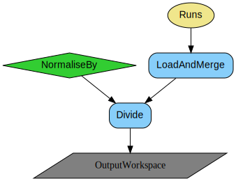
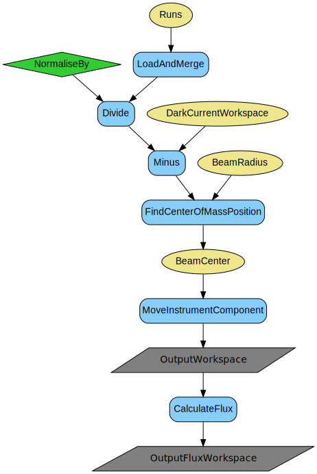
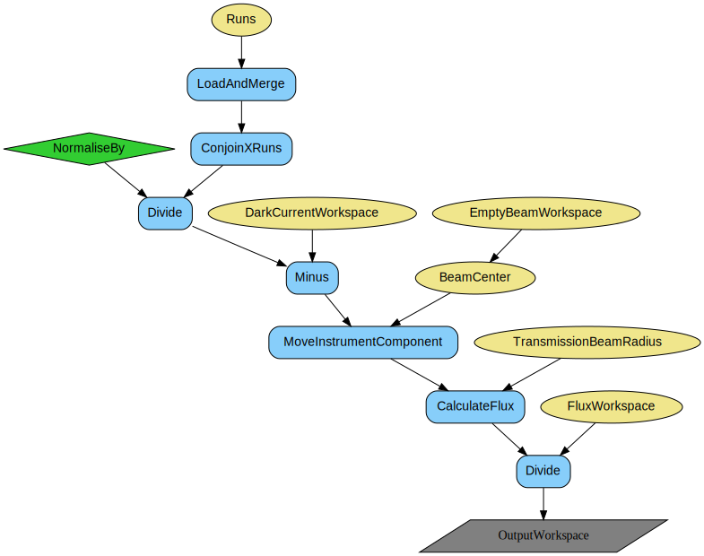
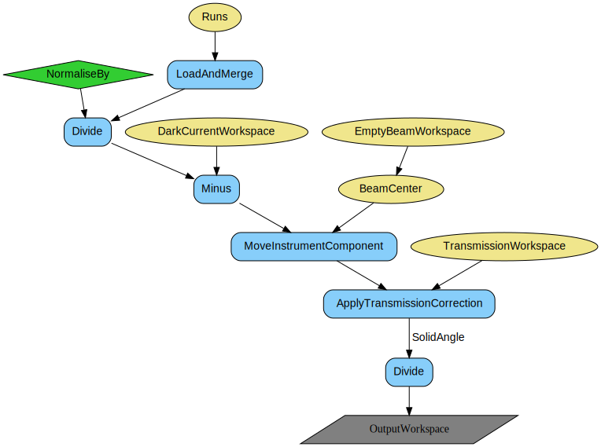
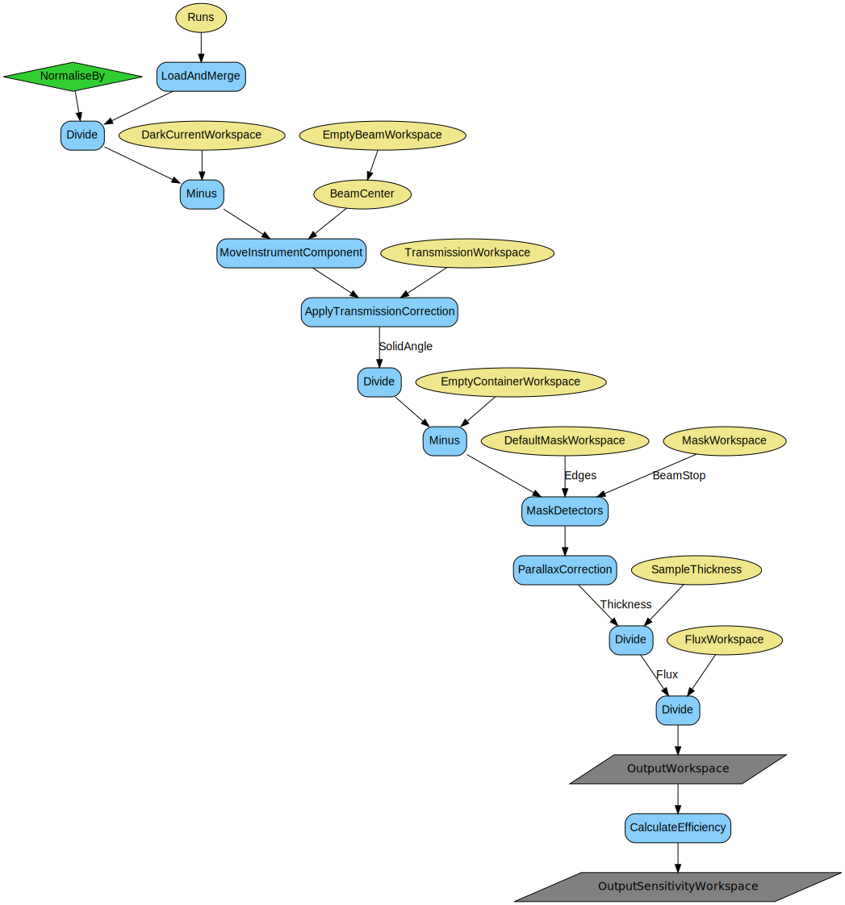
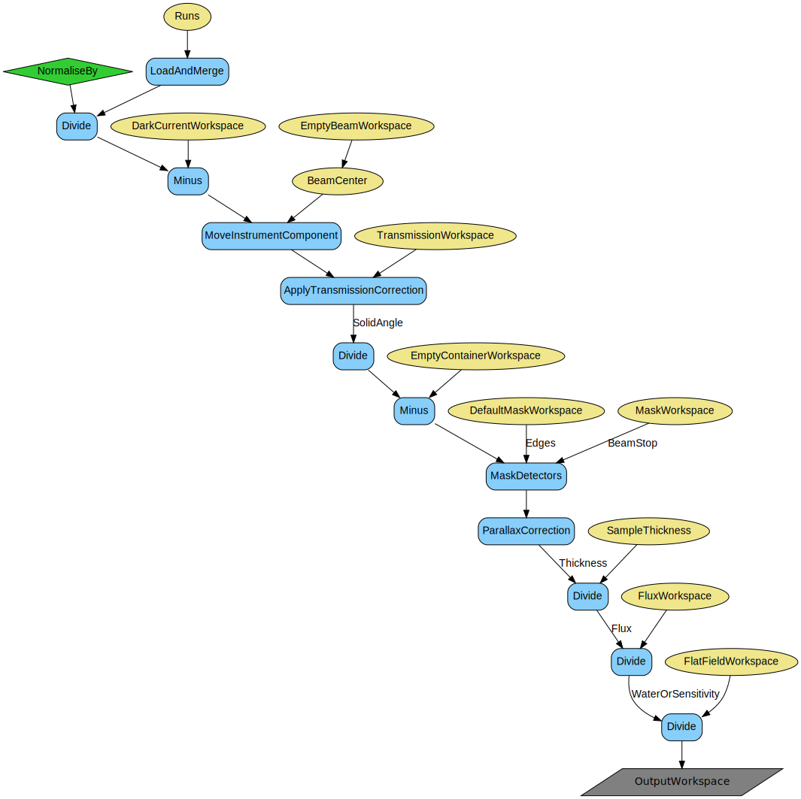
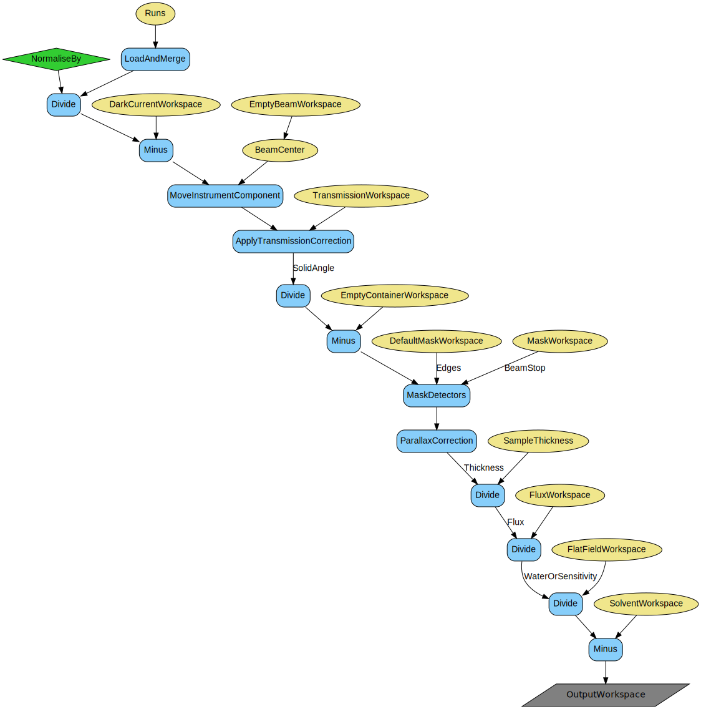
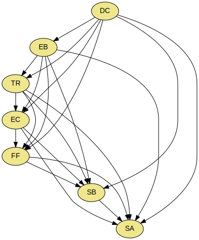

\(\renewcommand\AA{\unicode{x212B}}\)
SANSILLReduction dialog.
Table of Contents
| Name | Direction | Type | Default | Description |
|---|---|---|---|---|
| Runs | Input | list of str lists | File path of run(s). Allowed values: [‘nxs’] | |
| ProcessAs | Input | string | Sample | Choose the process type. Allowed values: [‘DarkCurrent’, ‘EmptyBeam’, ‘Transmission’, ‘EmptyContainer’, ‘Water’, ‘Solvent’, ‘Sample’] |
| OutputWorkspace | Output | Workspace | Mandatory | The output workspace based on the value of ProcessAs. |
| NormaliseBy | Input | string | Time | Choose the normalisation type. Allowed values: [‘None’, ‘Time’, ‘Monitor’] |
| BeamRadius | Input | number | 0.25 | Beam radius [m]; used for beam center search. |
| TransmissionBeamRadius | Input | number | 0.1 | Beam radius [m]; used for flux and transmission calculations. |
| SampleThickness | Input | dbl list | 0.1 | Sample thickness [cm] (if -1, the value is taken from the nexus file). |
| WaterCrossSection | Input | number | 1 | Provide water cross-section [cm-1]; used only if the absolute scale is performed by dividing to water. |
| TransmissionThetaDependent | Input | boolean | True | Whether or not to use 2theta dependent transmission correction |
| SampleWorkspace | Input | MatrixWorkspace | Input workspace containing already loaded sample data, used for parameter scans. | |
| DarkCurrentWorkspace | Input | MatrixWorkspace | The name of the Cd/B4C input workspace. | |
| EmptyBeamWorkspace | Input | MatrixWorkspace | The name of the empty beam input workspace. | |
| FluxWorkspace | Input | MatrixWorkspace | The name of the input empty beam flux workspace. | |
| TransmissionWorkspace | Input | MatrixWorkspace | The name of the transmission input workspace. | |
| EmptyContainerWorkspace | Input | MatrixWorkspace | The name of the container input workspace. | |
| FlatFieldWorkspace | Input | MatrixWorkspace | The name of the water input workspace. | |
| SolventWorkspace | Input | MatrixWorkspace | The name of the solvent input workspace. | |
| SensitivityWorkspace | Input | MatrixWorkspace | The name of the input sensitivity map workspace. | |
| DefaultMaskWorkspace | Input | MatrixWorkspace | Workspace to copy the mask from; for example, the bad detector edges. | |
| MaskWorkspace | Input | MatrixWorkspace | Workspace to copy the mask from; for example, the beam stop | |
| OutputSensitivityWorkspace | Output | MatrixWorkspace | The name of the output sensitivity workspace. | |
| OutputFluxWorkspace | Output | MatrixWorkspace | The name of the output empty beam flux workspace. |
This algorithm performs unary SANS data reduction for the ILL instruments. It can also be easily applied to other instruments at similar facilities. This algorithm performs all the instrumental corrections, but it does not perform azimuthal integration, which is a subsequent step in the full treatment. It is optimized for monochromatic and kinetic mode due to concatenation of many samples and frames into a single workspace along the x-axis.
The main input is the Runs, which is a multiple file property. It supports summing which will be performed at the raw level; that is, right after loading. The acquisition times and the monitor counts will also be summed, so that the summed data can be correctly normalised. The acquisition times (in seconds) will be stored in the second, empty monitor spectrum. The listing dimension is supported only for monochromatic and kinetic modes, which signifies the concatenation of different samples into the same workspace. Note that, it is up to the user to make sure that samples that are being concatenated are measured with strictly identical beamline/detector configuration (i.e. distance, wavelength). When providing multiple runs, it is assumed that they are homogeneous; that is, they correspond to the same instrument, same acquisition mode and the same dimensionality (i.e. number of frames in case of kinetic, number of channels in case of TOF). There are no checks regarding this for the purposes of performance.
The input workspaces do not have the word input in it, just to make the names shorter.
The main output, which will always be produced no matter the process type, is the OutputWorkspace, which is mandatory. Auxiliary, optional outputs are the OutputSensitivityWorkspace, which can be generated from water, and the OutputFluxWorkspace which is a second output when processing empty beam or flux runs.
ProcessAs is the main label, that governs how a certain run needs to be reduced and what we want to extract from it. Based on the value of that, different input workspaces can be passed and different output workspaces can be created. Below is the table summarizing the inputs per process type.
| ProcessAs | Input Workspace Properties |
|---|---|
| DarkCurrent | |
| EmptyBeam |
|
| Transmission |
|
| EmptyContainer |
|
| Water |
|
| Solvent |
|
| Sample |
|
All the input workspace properties above are optional. For example, if processing as sample, if a container input is specified, subtraction will be performed, if not, the step will be skipped. The only exception is when processing as transmission, when FluxWorkspace is mandatory, as the transmission is calculated as a ratio wrt the empty beam flux.
The flowcharts below explain the reduction steps performed for each process type. The yellow ovals represent the inputs, the grey parallelograms are the outputs for each process type.
The dark current refers to the blocked beam measurement with cadmium or B4C. There is not much to do in this case, except time or monitor normalisation.
The empty beam measurement can be used for 2 purposes: beam center finding and flux calculation. It produces 2 outputs respectively. The main one is the time or monitor normalized empty beam measurement, which has sample logs BeamCenterX and BeamCenterY. Those are the coordinates of the calculated center-of-mass of the beam footprint. BeamRadius parameter is used as the radius of the circle where to search for it. This workspace itself is corrected for the beam center and the dark current can be subtracted if provided. One should be able to inspect by eye that at this stage the Z axis (i.e. the beam) passes through the center-of-mass of the signal. The second output is the integrated flux workspace which sums the intensities in a given radius around the Z after having corrected for the beam center. Here, TransmissionBeamRadius is used for the integration circle.
Transmission calculation is a critical part of the reduction. Transmission refers to the central transmission value, which is calculated as the ratio of the integrated intensity transmitted through the sample and the empty beam flux. However, when applying the transmission correction, it is applied in a 2theta-dependent way, in order to account for flight path difference of the neutrons within the flat plate sample. For cylindrical samples, 2theta-dependence must be switched off. TransmissionBeamRadius governs the size of the circle to integrate the intensities within. Transmission runs can be concatenated, which can generate a single transmission workspace that can be later applied in a vectorized way. Of course, only transmissions measured at the same wavelength can be concatenated, as the transmission is wavelength dependent. Furthermore, the transmission runs are also allowed to be kinetic, in which case the transmissions will be calculated frame-by-frame, i.e. in a time-dependent fashion. Transmissions runs input can also have duplicated runs, in case the same transmission needs to be applied to more than one sample (see the dedicated section below). Transmission values must be positive and less than unity.
This is the container the samples are measured in. Empty container must be provided with its own transmission, which is typically close to 1, but still it is needed to perform the subtraction correctly. The container workspace is the first process type that is also normalized by the solid angle. This is just to allow the containers to be measured at different distances if needed. However, typically they are measured at the same beamline configurations as the samples.
This refers to the incoherent isotropic standard sample, which is typically water, but can also be vanadium. This can be used for 2 purposes: correcting for relative inter-pixel detector efficiencies and, in case of water, calibrating the absolute scale. The water measurement can be used in 2 ways: dividing sample by the water, in which case it will effectively correct for both, or generating a sensitivity workspace. The latter only captures the detector efficiencies, but does not alter the absolute scale. The advantage of that is that it can be measured once, and reused in many experiments, at any distances and wavelengths. Furthermore, with D22 detector which can be moved laterally, one can perform water measurements with and without lateral offset to obtain the efficiency map without a beam stop shadow in the middle. When dividing sample by the water, they must be in the same units; that is, either both in absolute scale (already divided by the empty beam flux), or both not in absolute scale. Otherwise the algorithm will throw an error. In case they are not in absolute scale individually, they must be measured with the same distance. In the contrary, if both are already in absolute scale (so divided by the respective empty beam fluxes), the water normalisation can be safely done, even if the water is at a different distance. This is typically the case, as at large distances, water does not scatter enough to have a reasonable statistics in a short time. The absolute water cross-section must be relatively flat as a function of Q, and around 0.9 - 1.0 depending on the wavelength. Corrected water measurement is also referred to as flat field.
One can perform solvent (buffer) subtraction in 3 ways:
Therefore, this process type is useful only in the case 3 above.
Below is the treatment of the samples. This is similar to the solvent diagram above (solvent is treated just as a sample), except that here one can also provide the solvent input for the subtraction. Sample runs can be standard monochromatic, or kinetic. It is not allowed to have a duplicated run number in the runs list. It will concatenate the runs along the a-axis of the workspace, corresponding to the listing dimension in the input files. Sample runs can have blanks corresponding to missing measurements, see the dedicated section below.
Full treatment is built by stacking up unary reductions with corresponding ProcessAs. The diagram below illustrates the flow of processing. Letters denote the dark current (Cd/B4C) (DC), empty beam (EB), transmission (TR), empty container (EC), flat field (water) (FF), solvent (buffer) (SB), and sample (SA).
As mentioned, the transmission runs can be repeated, in case the same run needs to be used for more than one sample. For example 100500,100501,100501,100502 will mean that the same 100501 will be used for the 2nd and 3rd samples. Technically speaking, since the transmission are applied in a vectorized way, the algorithm will duplicate the 100501 workspace in order to broadcast to the right dimension. Transmission runs cannot be blank.
Unlike transmissions, the sample runs cannot be repeated as it makes no sense. In the contrary, the so-called blank runs are allowed. Run number 0 is the placeholder for the blanks; that is, for missing measurements. It is sometimes useful to fill a full table with many detector distances, but certain samples might not have measurements at each distance. This is when the blanks can be used, in order to keep the correspondence with the calibration measurements correct. For example, 200600, 0, 200601, 200602 means that at a given distance, sample 2 wasn’t measured, but to match the transmissions in the right way, we have to have a blank run. Technically speaking, the algorithm will generate a 0-count workspace and inject it in the position of the blank. It will have the same dimension as the real runs, so that after concatenation, the corrections can be applied in a vectorized way.
Only sample and transmission runs are allowed to be kinetic numors, the calibration measurements are not. Kinetic measurements will also be concatenated, e.g. 10 samples with 100 frames each will produce a single workspace with 1000 frames. Transmissions can be kinetic only if the samples are kinetic. It is understood that in this case the number of frames must match. However, if the samples are kinetic, the transmissions might or might not be kinetic. Nonetheless, they cannot be mixed; that is, either all transmissions are standard or all are kinetic.
Categories: AlgorithmIndex | ILL\SANS
Python: SANSILLReduction2.py
{kind=link}